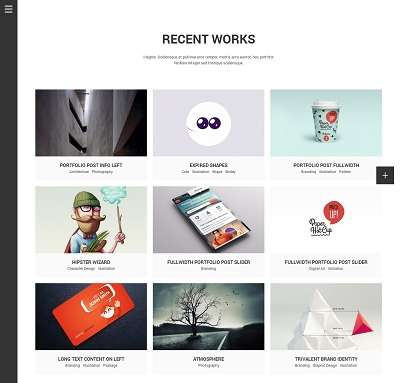

Thank you for purchasing my theme. If you have any questions that are beyond the scope of this help file, please feel free to email via my user page contact form here. Thanks so much!
After extract the main zip file, you'll see these folders and files:
We provide 38 HTMLs:
All of the information within the main content area is nested within a div with an id of "wrap". Here is the general structure.
All style.css are put in head tag, put all js files(In addition to jquery.js) before </body>tag.
<!-- Page Loading -->
<div...>...</div>
<!-- Jplayer -->
<div...>...</div>
<!--Mobile Header meta-->
<div...>...</div>
<div id="wrap">
<!--Sidebar-->
<aside...>...</aside>
<!--Header-->
<header...>...</header>
<!--#main-wrap-->
<div id="main-wrap">...</div>
</div>
<div id="float-bar"...>...</div>
Open a html file with editor, you'll find the code:
<!--Sidebar--> <aside id="sidebar" class="sidebar_hide">...<aside>
If you want to set the sidebar shown always, there is 2 ways:
1. Change className of aside tag:
<aside id="sidebar" class="sidebar_hide">
change as:
<aside id="sidebar" class="sidebar_show">
2. link the css file "sidebar-shown.css" below the style.css
<link rel="stylesheet" id="ux-aside-css" href="./styles/sidebar-shown.css" type="text/css" media="screen">
There is another transition effect when sidebar is hovered.
<aside id="sidebar" class="sidebar_hide">
change as:
<aside id="sidebar" class="sidebar_hide sidebar_hide_b">
<!--Logo--> <h1 id="logo"><a href="index.html" title="Aside Responsive HTML Theme">Aside</a></h1>>
<!--Logo--> <h1 id="logo"><a href="index.html" title="Aside Responsive HTML Theme"><img alt="Aside" src="img/logo.png"></a></h1>>
The Image logo size is limited max height as 60px.You could change it in line 311 of style.css
#logo img {
max-height: 60px;vertical-align: top;width: auto;
}
Edit menu here:
<!--Menu-->
<nav id="navi" class="clearfix">
<div id="navi_wrap" class="menu-demo-menu-container">
<ul class="menu">
<li id="menu-item-885" class="menu-item ...">
<a>HOME</a>
<ul class="sub-menu">
<li id="menu-item-896" class="menu-item ..."><a href="index-mixed.html">MIXED</a></li>
<li id="menu-item-895" class="menu-item ..."><a href="index-fullscreen-slide.html">FULLSCREEN SLIDE</a></li>
</ul>
</li>
...
</ul>
</div>
</nav>
Each <li> tag with class 'menu-item' is a menu item, you could edit the text and link.
<li class="menu-item"><a href="somepage.html">Menu item</li>
If you want to add submenu in Menu item, just insert code in <li>... Menu item ... </li> like this:
<li class="menu-item"><a href="somepage.html">Menu item</a>
<ul class="sub-menu">
<li class="menu-item"><a href="otherpage.html">Sub menu</a></li>
</ul>
</li>
Open index.html with editor, footer code is here:
<div class="sidebar-bottom-wrap">
<!--Search bar-->
<form ...>
...
</form>
<!--Social icons-->
<div class="social-icons-sidebar">
...
</div>
<!--Copyright-->
<div class="copyright">
...
</div>
</div>
<!-- Search bar --> <form id="search_form_1"...> ... </form>
The search need backend program.
Find the code:
<!-- Social icons -->
<div class="social-icons-sidebar">
<a class="icons-sidebar-unit" href="https://twitter.com/uiueux" title="Follow us"><i class="fa fa-twitter-square"></i></a>
<a class="icons-sidebar-unit" href="https://www.facebook.com/Uiueux/" title="Follow us"><i class="fa fa-facebook-square"></i></a>;
<a class="icons-sidebar-unit" href="#" title=""><i class="fa fa-google-plus-square"></i></a>;
<a class="icons-sidebar-unit" href="#" title=""><i class="fa fa-youtube-square"></i></a>;
<a class="icons-sidebar-unit" href="#" title=""><i class="fa fa-vimeo-square"></i></a>;
<a class="icons-sidebar-unit" href="#" title=""><i class="fa fa-tumblr-square"></i></a>;
<a class="icons-sidebar-unit" href="#" title=""><i class="fa fa-rss-square"></i></a>;
<a class="icons-sidebar-unit" href="#" title=""><i class="fa fa-pinterest-square"></i></a>;
<a class="icons-sidebar-unit" href="#" title=""><i class="fa fa-linkedin-square"></i></a>;
<a class="icons-sidebar-unit" href="#" title=""><i class="fa fa-instagram"></i></a>;
<a class="icons-sidebar-unit" href="#" title=""><i class="fa fa-github-square"></i></a>;>
<a class="icons-sidebar-unit" href="#" title=""><i class="fa fa-xing-square"></i></a>;
<a class="icons-sidebar-unit" href="#" title=""><i class="fa fa-flickr"></i></a>;
<a class="icons-sidebar-unit" href="#" title=""><i class="fa fa-vk square-radiu"></i></a>;
<a class="icons-sidebar-unit" href="#" title=""><i class="fa fa-weibo square-radiu"></i></a>;
<a class="icons-sidebar-unit" href="#" title=""><i class="fa fa-renren square-radiu"></i></a>;
<a class="icons-sidebar-unit" href="#" title=""><i class="fa fa-bitbucket-square"></i></a>;
<a class="icons-sidebar-unit" href="#" title=""><i class="fa fa-foursquare square-radiu"></i></a>;
<a class="icons-sidebar-unit" href="#" title=""><i class="fa fa-skype square-radiu"></i></a>;
<a class="icons-sidebar-unit" href="#" title=""><i class="fa fa-dribbble square-radiu"></i></a>;
...
</div>
You could edit the icon and link, check the fontawesome and replce the blue tag:
<i class="fa fa-facebook-square">
You should put the main content things to the main-wrap wrap.
<div id="main-wrap">
...
</div>
The header is shown on mobile layout only. You coudl set the logo for mobile layout in this wrap.
<header id="header" class=""> ... </header>
The content of the wrap woule be shown in mobile device(screen width is less 768px)
<div id="mobile-header-meta"> ... </div>
The theme is default to show the responsive layout when screen width is less 768px. You could remove the class "responsive-ux" in BODY tag to forbid it.
It is a basic layout. You could make the about page, contact page, portfolio/blog list page by the page template, please refer: index.html, page-abot-us.html. If you want to insert the modules in the template, please make sure the wrap is like:
<div id="main-wrap">
<div id="main" style="">
<div id="content">
<div id="post-xxx" class="page type-page hentry">
<div class="row-fluid " style="">
<div id="content_wrap" class="">
<div class="content-wrap-inn bottom-space ">
<div class="container">
...Page's Title...
<div class="pagebuilder-wrap">
<div class="container">
<div class="row-fluid">
<div class="span12 moudle">
span12 means width,
the template is based on bootstrap 2.3. It obeys the bootstrap grid system :
span3 = 1/4 column
sanp4 = 1/3 column
span6 = 1/2 column
span12 = 1/1 column
(check more)
You could use the fullwidth wrap or Boxed Wrap:
If you want put the content fill to fullwidth of main-wrap, use the fullwidth wrap as the index.html
<div class="fullwrap_moudle">
<div class="row-fluid">
<div class="fullwidth-wrap">
<div class="row-fluid">
...
</div>
</div>
</div>
</div>
You could set the background image parallax for the fullwidth wrap, please refer index-mixed.html
<div class="parallax" data-ratio="0.3" style="background-image:url(http://ximudesign.com/bee/wp-content/uploads/sites/13/2014/03/fullwidth-wrap-bg.jpg)"></div>
You could change the image in url(). The data-ratio is the ratio of scrolled speed. You could set it a number ( 0.1 - 0.5 is ok )
You could set the background video for the fullwidth wrap, please refer page-about-us.html
<div class="fullwrap-video">
<video autoplay="" loop="" poster="http://ximudesign.com/aside/wp-content/uploads/sites/17/2014/04/video-post.jpg">
<source src="http://ximudesign.com/project/bgvideo.webm" type="video/webm">
<source src="http://ximudesign.com/project/bgvideo.m4v" type="video/mp4">
<source src="http://ximudesign.com/project/bgvideo.ogg" type="video/ogg">
</video>
<div class="video-cover" style="background-image: url(http://ximudesign.com/aside/wp-content/uploads/sites/17/2014/04/video-post.jpg);"></div>
</div>
Video type:
Touch devices do not support video background, you would set a background image
If you want put the content in boxed wrap of main-wrap, use the contnaier wrap as the index-mixed.html
<div class="container">
<div class="row-fluid">
...
</div>
</div>

Normally, the blog content page is made by the template: content-standard-format.html, content-link-format.html, content-audio-hosted.html, content-audio-soundcloud.html, content-video-embed.html and 9 portfolio content templates:
please refer: content-portfolio-fullwidth.html / content-portfolio-images-on-right.html / content-portfolio-images-on-left.html
please refer: content-portfolio-fullwidth-slider.html / content-portfolio-images-on-right-slider.html / content-portfolio-images-on-left-slider.html
please refer: content-portfolio-fullwidth-masonry.html / content-portfolio-images-on-right-masonry.html / content-portfolio-images-on-left-masonry.html
You could use slider in portfolio contnet page, please refer: content-portfolio-fullwidth-slider.html
The slider is created by the awesome galleria jquery plugin. The js/css files are necessary:
put galleria.classic.css above the stlye.css,
put galleria-1.3.5.js and galleria.classic.min.js above the custom.theme.js .
The options included:
Transtion options are: fade, slide.
Slider crop options are: true, false.
True is for fullscreen, false for fitscreen
Slider interval is the timer interval.
Set this option in file content-portfolio-slider.html here:
<div class="galleria" data-crop="false" data-transition="fade" data-interval="5000">
You could use fullscreen slider in this template, please refer: index-fullscreen-slide.html, the options are same as gallery slider. The border would be removed if the class value bordered is removed.
<div class="galleria bordered" data-crop="true" data-transition="fade" data-interval="4000">
It is a sepcial layout, there are 2 columns in content wrap. If you want to highlight a picture, the layout is ok. You could use some simple element in content column(scrolled animate not support).
please refer: page-about-me.html / page-jobs.html
It is a simple artcle list page. You could make archive or search result page by the template
Note:
Be sure all the Modules works, please make sure the things:
<link rel="stylesheet" id="pagebuild-css" href="./styles/pagebuild.css" type="text/css" media="screen">
<script type="text/javascript" src="./js/theme.pagebuilder.js"></script>
<script type="text/javascript">
jQuery(document).ready(function() {
var ux_pb = new ThemePageBuilder();
ux_pb.init();
});
</script>
<div class="isotope">
<!-- Item -->
<div class="isotope-item ...">...</div>
...
</div>
Each <div class="isotope-item ...">...</div> is a post block.
We provide 2 styles pagination for list page(blog and portfolio), please refer blog-masonry.html for numbers pagination and portfolio-grid-ajax.html for twitter style(Load More) pagination
Numbers pagination like this:
<div class="clearfix pagenums">
<div class="pagination">
<a class="current inactive select_pagination not_pagination" href="blog-masonry.html">1</a>
<a class=" inactive select_pagination not_pagination" data-post="20140408-131759-171" data-postid="550" data-paged="2" data-module="blog"
data-aurl="nextpage/pagination-page-number-2.html" href="#">2</a>
</div>
</div>
Twitter Style(Load More) pagination like this:
<div class="clearfix pagenums tw_style page_twitter">
<a data-post="20140326-131115-261" data-postid="56"
data-paged="2" data-count="2" data-module="liquid-list" data-aurl="nextpage/more.html" href="#" class="not_pagination">Load More</a>
</div>
We use lokesh's wonderful jquery lightbox plugin (Github) . Make sure the lightbox.css and the lightbox.min.js is linked, please refer content-standard-format.html. Add the code to tag a: data-lightbox="image name"
The elements included: H1-H6 font, Capital first letter, Text with icon list and typography with background color, please refer elements-typography.html
You could make testimonial or latest twitter by the module, please referindex-mixed.html, the jquery.flexslider-min.js is necessary
<div class="flex-slider-wrap testimonial-wrap ux-mod-nobg" data-direction="false" data-control="true" data-speed="5" data-animation="fade">
<div class="flexslider">
<ul class="slides clearfix">
<li class="testimonial-item flex-active-slide">
You could change the speed by the data-speed value (unit: second), you could set the data-animation as "slide". each li is a item of Carousel.
please refer index-mixed.html
<div class="span12 moudle moudle_has_animation animation-default-ux animation-scroll-ux bottom-space-40 animation_hidden ">
<div class="row-fluid">
<div class="container-isotope" data-post="20140417-063022-739">
<div class="isotope grid_list team-isotope" data-space="40px" data-size="medium">
<div class="width2 isotope-item" >
Each isotope-item is a item of team
2 layouts: with background / without background
2 layouts for tabs: Horizontal and vertical
4 colors for massage box
please refer page-about-us.html
Set Google map parameters in file page-about-us.html here:
<div class="module-map-canvas" data-add="Sydney, NSW" data-l="-33.8674869" data-r="151.20699020000006" data-zoom="17" data-pin="t" data-view="map" data-dismouse="f" data-pin-custom="" data-style="f" style="height: 360px;"> </div>
Data-view options are: map, satellite, map_terrain. option value "t" present true and "f" present false
Set contact form receive email address in file contact.php here:
$mailTo = 'yourmail@yourmal.com';
5 types included: Bar, Columns, Pie, Pictorial and BigNumber, please refer elements-infographic.html
the js/infographic.js is necessary
html wrap here for each bar:
<div class="span6 moudle"> <section class="infrographic bar ux-mod-nobg"> ... </section> </div>
html wrap here for a grounp of columns:
<section class="infrographic columns ux-mod-nobg"> <div class="vbar-item" style="width: 25%;"> ... </div> </section>
There are 4 columns in sample page, If you want to change the number of items, please change the item width value.
html wrap here for pie:
<div class="span3 moudle"> <section class="infrographic pie ux-mod-nobg"> ... </section> </div>
html wrap here:
<div class="span12 moudle"> <section class="infrographic pictorial"> ... <i class="bar_noactive grey fa fa-female"> </i> ... </section> </div>
You could change the icons as you want
html wrap here:
<div class="span3 moudle"> <section class="infrographic bignumber ux-mod-nobg"> ... </section> </div>
please refer elements-imagebox.html
There are 2 layouts: icon left align and icon center
<div class="span4 moudle from-top-translate bottom-space-40"> ... </div>
You could change the icon of iconbox, check the fontawesome and replce the blue tag:
<i class="fa fa-camera"></i>
You could replace your own image in tag img and image:
<div class="span4 moudle moudle_has_animation from-bottom-translate animation-default-ux animation-scroll-ux bottom-space-40 animation_hidden">
...
<img width="400" height="400" src="xxx.jpg" class="image-box-img-iehack" alt="xxx">
...
<image style="clip-path: url(#image-box431); width:160px; height:160px; " height="160" width="160" xlink:href="xxx.jpg"></image>
please refer page-coming-soon.html
the jquery.countdown.min.js is necessary, please set the date/time value in the wrap:
<div class="countdown" data-years="2015"
data-months="8" data-days="08" data-hours="07" data-minutes="45" data-seconds="28" data-dateformat="dHMS">
</div>
The data-dateformat="dHMS" means: displaying day-hour-minutes-seconds, the year/mouth value is: "y" / "o"
please refer elements-imagebox.html
put the animation tag to element(moudle) wrap, add the class name to moudle wrap (the blue option coule be replaced other animation options):
moudle_has_animation rotate-downleft-translate animation-default-ux animation-scroll-ux animation_hidden
Final:
<div class="span4 moudle moudle_has_animation rotate-downleft-translate animation-default-ux animation-scroll-ux animation_hidden"> </div>
All the animation option:
FadeIn : default
FadeIn from Right : from-right-translate
FadeIn from Left : from-left-translate
FadeIn from Up : from-up-translate
FadeIn from Down : from-bottom-translate
BouncdeIn from Right : bouncdein-right-translate
BouncdeIn from Left : bouncdein-left-translate
BouncdeIn from Up : bouncdein-upown-translate
BouncdeIn from Down : bouncdein-down-translate
Flip X : flip-x-translate
Flip Y : flip-y-translate
RotateIn from DownLeft : rotate-downleft-translate
RotateIn from DownRight : rotate-downright-translate
Note: please don't set the animation class to portfolio, blog, map, video and inforgraphic Modules.
There are 9 main CSS files in this theme.
If you would like to edit a specific section of the site, simply find the appropriate label in the CSS file, and then scroll down until you find the appropriate style that needs to be edited.
Open the styles folder, you'll find all css files.
Note:
You could find the "Theme default Color scheme" secton in style.css, please refer the screenshot:
You could use the dark background, please link the dark.css below stye.css
This theme imports 15 Javascript files. All located in the "js" folder.
Note:
{kind=link}